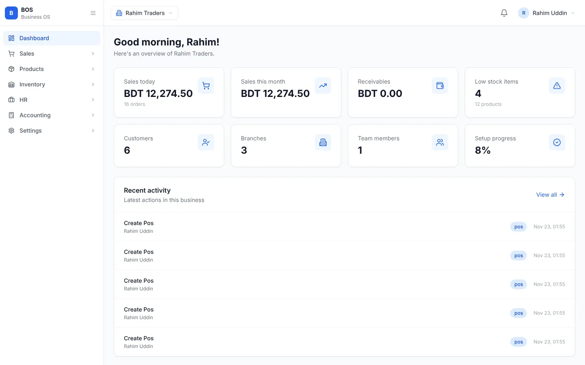
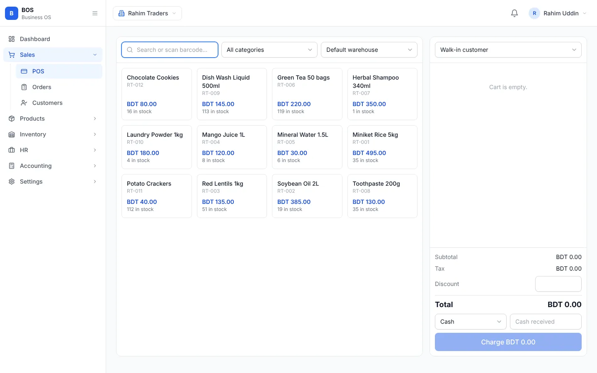
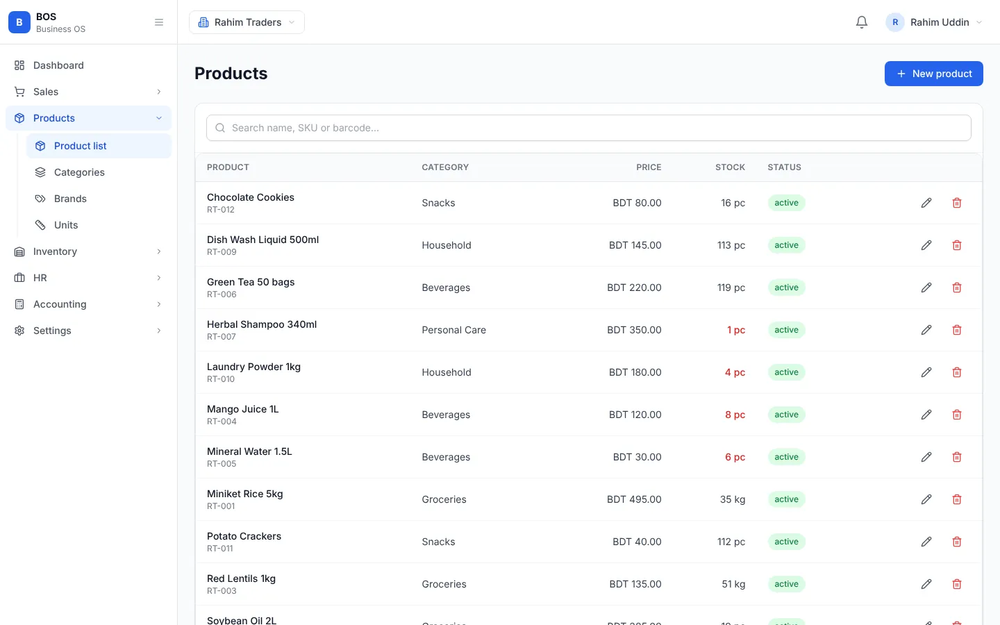
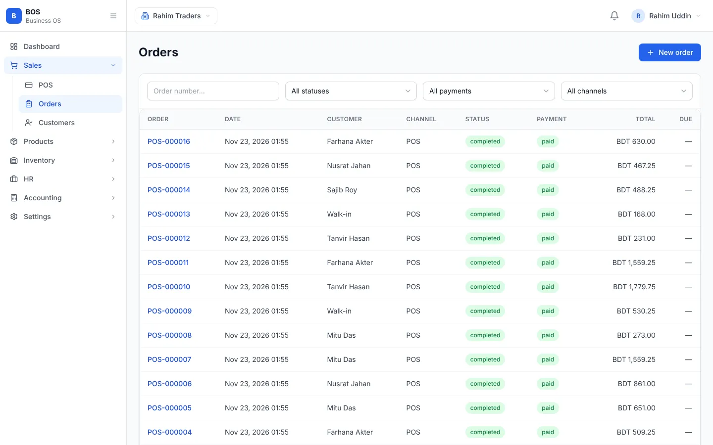
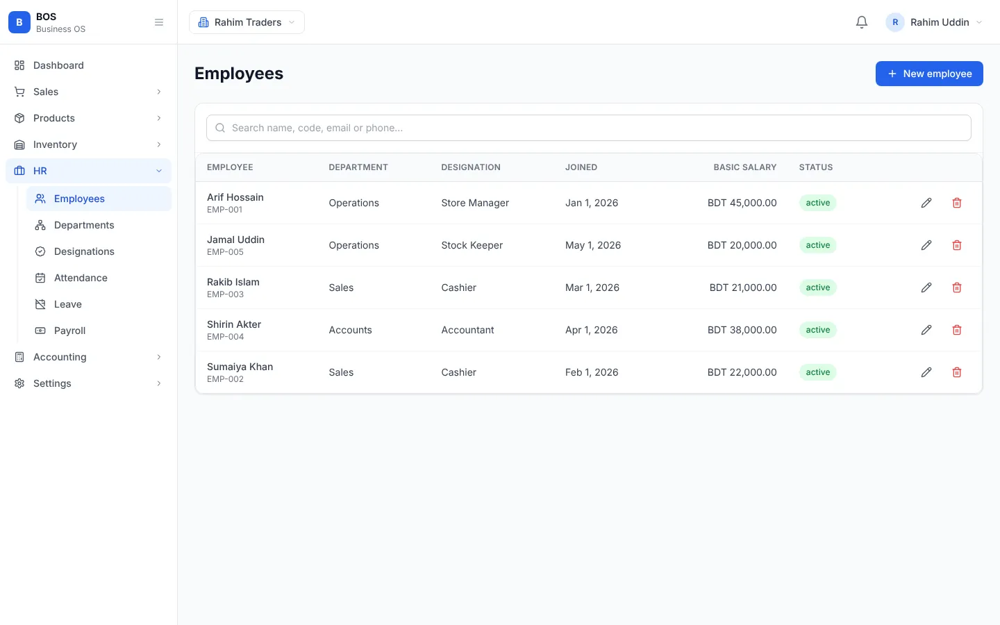
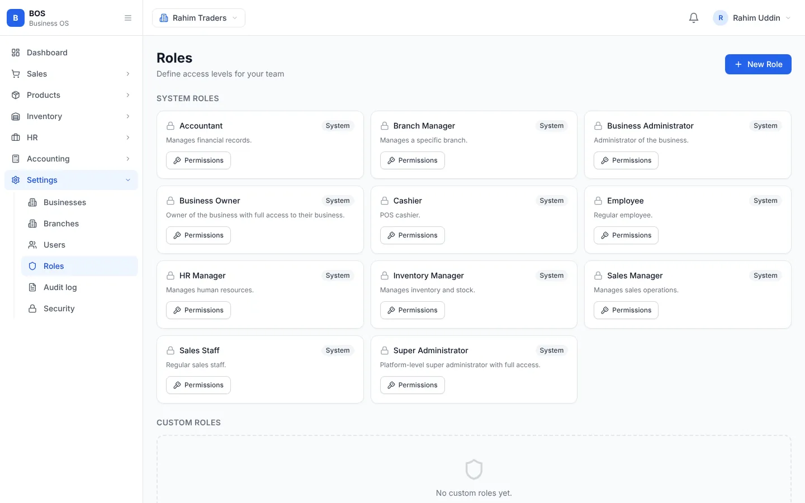

Run the whole business from one screen.
BOS is a business operating system for shops and companies with more than one branch. Sell at the counter, track stock across warehouses, pay your team and keep the books, while every sale posts itself to the ledger.

Everything a growing business runs on.
Each module works on its own and shares data with the rest, so a sale updates stock, receivables and the ledger at the same moment.
Sales and POS
Fast counter checkout with barcode lookup, customers, orders, partial payments and returns.
Products and inventory
Categories, brands and units, multiple warehouses, stock transfers, adjustments and a full movement history.
HR and payroll
Employees, departments, attendance and leave, then payroll runs with deductions and printable payslips.
Accounting
A real double-entry ledger with a default chart of accounts, expenses, P&L, balance sheet and trial balance.
Businesses and branches
Run several businesses under one account, each with its own branches, and switch between them in a click.
Roles and audit
Fine-grained permissions per business or branch, plus an audit log of who did what and when.
Built for the counter and the back office.
A clean, consistent interface across every module. Click a screen to enlarge. Screenshots use demo data.

Point of sale: search or scan, build the cart, take payment.

Product catalogue with prices, categories and live stock.

Every order with its customer, total, payment and status.

Employees by department, ready for attendance and payroll.

Built-in and custom roles with module-level permissions.
One account, many businesses, every branch.
BOS keeps each organisation's data strictly apart and lets a business grow from one shop to many without changing tools.
Tenant isolation
Every business table carries a tenant ID, and every query is scoped to it automatically.
Permissions that fit real teams
Roles apply to a whole business or a single branch. 11 system roles ship ready to use.
Secure sign-in
Email OTP activation, TOTP two-factor login, token refresh and session management.
Full audit trail
Important actions are logged with the user, the business and the time.
Every sale writes its own journal entry.
Each business starts with a chart of accounts. From then on, everyday events post balanced double-entry journals, so reports are always up to date.
| Event | Debit | Credit |
|---|---|---|
| Order completed | Accounts receivable · cost of goods sold | Sales revenue · sales tax payable · inventory |
| Payment received | Cash or bank | Accounts receivable |
| Return | Sales returns · tax payable · inventory | Accounts receivable · cost of goods sold |
| Stock adjustment | Inventory | Opening equity or inventory adjustments |
| Payroll paid | Salaries and wages | Bank · payroll deductions payable |
| Expense approved | Expense account | Cash, bank or payable |
A modern stack, easy to host.
A Laravel API and a React single-page app, packaged so a small team can run it on one server or a container platform.
- One Dockerfile serves the app and the API together
- One-command install script for Debian 12 and 13
- Feature tests for the API
# run it with Docker docker build -t bos . docker run -p 8080:8080 --env-file .env bos # or on a fresh Debian server sudo bash deploy/install-debian.sh # every API call carries its context GET /api/v1/dashboard/stats X-Tenant-ID: … X-Business-ID: … X-Branch-ID: …
All five build phases are in.
Foundation
Tenants, businesses, branches, users, roles, permissions, audit logs and secure sign-in.
Products and inventory
Catalogue, warehouses, transfers, adjustments and stock movements.
Sales and POS
Counter checkout with barcodes, customers, orders, payments and returns.
HR and payroll
Employees, attendance, leave, payroll runs and payslips.
Accounting
Automatic double-entry posting, financial reports and CSV export.
Want BOS for your business?
The code is open on GitHub. Get in touch for a demo, a pilot setup or to help build it.